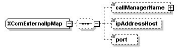
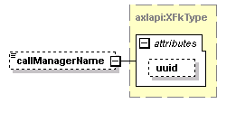

| diagram |  |
| namespace | http://www.cisco.com/AXL/API/10.5 |
| children | callManagerName ipAddressHost port |
| used by | |
| source | <xsd:complexType name="XCcmExternalIpMap"> <xsd:sequence minOccurs="0"> <xsd:element name="callManagerName" type="axlapi:XFkType" minOccurs="0" maxOccurs="1"/> <xsd:element name="ipAddressHost" type="axlapi:String255" minOccurs="0" maxOccurs="1"/> <xsd:element name="port" type="axlapi:String255" default="5060" minOccurs="0" maxOccurs="1"/> </xsd:sequence> </xsd:complexType> |
| diagram |  | ||||||||||||
| type | axlapi:XFkType | ||||||||||||
| properties |
|
||||||||||||
| attributes |
|
||||||||||||
| source | <xsd:element name="callManagerName" type="axlapi:XFkType" minOccurs="0" maxOccurs="1"/> |
| diagram | |||||||
| type | axlapi:String255 | ||||||
| properties |
|
||||||
| facets |
|
||||||
| source | <xsd:element name="ipAddressHost" type="axlapi:String255" minOccurs="0" maxOccurs="1"/> |
| diagram | |||||||||
| type | axlapi:String255 | ||||||||
| properties |
|
||||||||
| facets |
|
||||||||
| source | <xsd:element name="port" type="axlapi:String255" default="5060" minOccurs="0" maxOccurs="1"/> |